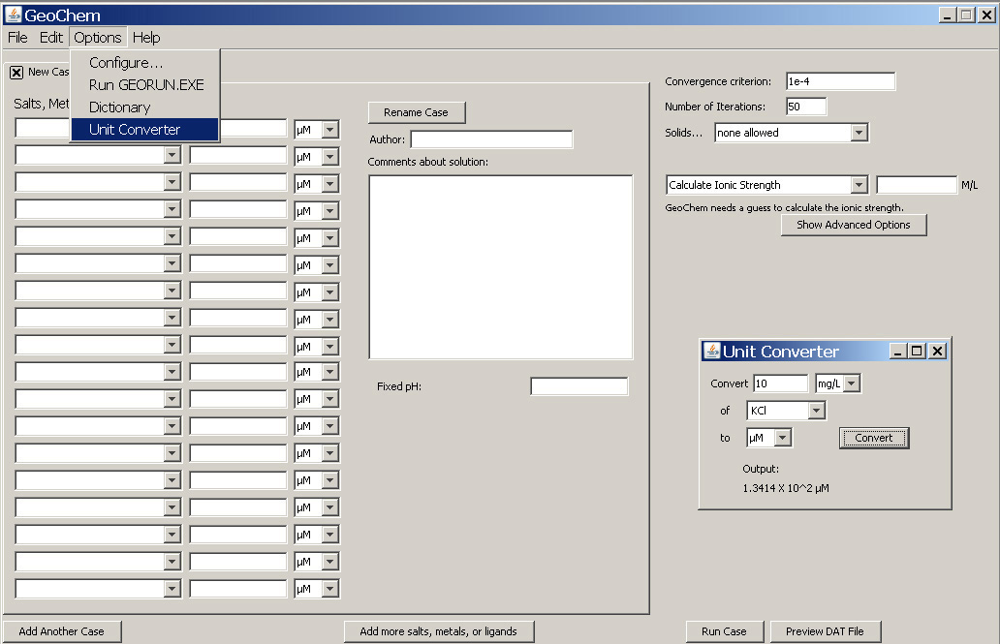

Unit Converter -

Allows the user to convert between mg/L or g/L and nM, µM, mM, or M.
Use the drop down menu bar to select the salt, metal, or ligand of interest. Anything that is in the salts database can be found in the drop down list. In this case, we converted 10 mg/ L KCl into µM concentration. Output is shown as a number with 4 decimal places, followed by a base 10 exponent.
